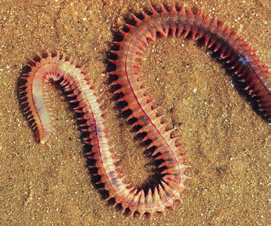

Son animales tan comunes y conocidos como las lombrices de tierra y las sanguijuelas. Sin embargo, los más abundantes y desconocidos son marinos.
El cuerpo de los anélidos
Presentan simetría bilateral y su cuerpo se halla dividido en anillos. La mayoría cuenta con pelos duros en la piel, denominados quetas, que permiten su locomoción.
En la cabeza se encuentra la boca y en el extremo posterior está el ano. A lo largo del cuerpo se localizan las quetas. Algunos anélidos poseen clitelo, una estructura relacionada con la reproducción.
Lombrices de tierra en el sueloLombriz de tierra en el suelo
Las funciones vitales de los anélidos
La respiración es cutánea en las lombrices de tierra y en la mayoría de las sanguijuelas. En las especies marinas se realiza mediante branquias, que son tubos filamentosos con vasos sanguíneos que permiten el intercambio gaseoso. Algunos son carnívoros y disponen de potentes mandíbulas, como Nereis; otros, como la lombriz de tierra, son detritívoros, es decir, se alimentan de materia orgánica en descomposición. Hay también especies filtradoras de plancton, como los gusanos plumeros, o parásitas, como las sanguijuelas.
Se reproducen sexualmente. Existen especies con sexos separados, mientras que otras son hermafroditas, como la lombriz de tierra y la sanguijuela. La fecundación puede ser interna o externa. Estos animales son ovíparos.
Algunos presentan órganos de los sentidos para detectar la luz.
Clasificación de los anélidos
Oligoquetos
Poseen pocas quetas, como la lombriz de tierra.
Poliquetos
Tienen muchas quetas, como Nereis.
Hirudineos
Carecen de quetas, como la sanguijuela.

Criatura marinaOruga colorida sobre una hojaLombriz de tierra sobre hierbaGusano submarino